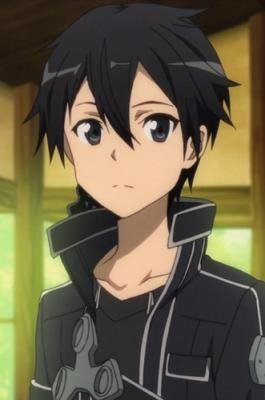

|
Arata Kasuga |
- Trinity Seven
- Trinity Seven OVA
- Trinity Seven Movie 1: Eternity Library & Alchemic Girl
- Trinity Seven Movie 2: Heavens Library to Crimson Lord
|
Arata Kasuga is a magus and student at Royal Bibilia Academy. He is the Demon Lord of the Superbia Archive. Arata possess the ability to nullify and copy magic. He has a carefree and cheerful personality. Usually cracking jokes, teasing others and very perverted. Despite his perversion, Arata has a mature view of relationships. |
 |
Flatt Escardos |
- Fate/Apocrypha
- Lord El-Melloi II's Case Files: Rail Zeppelin Grace Note - A Grave Keeper, a Cat, and a Mage
- Lord El-Melloi II Case Files: Rail Zeppelin Grace Note
|
Flatt Escardos is one of Lord El-Melloi's students. He is a genius of Magecraft, but within the Clock Tower he is a top-tier student and infamious for being a problematic child. He is whimsical in nature, and overall temperament is unlike that of a magus. Carefree and affiectionate, he is a boy none can hate. He showcases an amazing camaraderies with Svin from his class. |
|  |
Kirito |
- Sword Art Online
- Sword Art Online: Sword Art Offline
- Sword Art Online: Extra Edition
- Sword Art Online: Extra Edition - Sword Art Offline
- Sword Art Online II
- Sword Art Online II: Debriefing
- Sword Art Online II: Sword Art Offline
- Sword Art Online Movie: Ordinal Scale
- Sword Art Online: Alicization
- Sword Art Online: Alicization - Recollection
- Sword Art Online: Alicization - Reflection
- Sword Art Online: Alicization - War of Underworld
- Sword Art Online: Alicization - War of Underworld Recap
- Sword Art Online: Alicization - War of Underworld: Part II
|
Kirito or Kigigaya Kazuto is a solo player who usually works alone. He lives in the real world with his aunt and cousin. He is very quite direct. He is always a calm and collected character. |
 |
Ren Amaki |
- The Rising of the Shield Hero
|
Ren Amaki is the Sword Hero, one of the four Holy Heros summoned in Melromarc. He is a person who acts cool and portray a loner's image. Ren runs his party like a guild. He is more reasonable than Bow and Spear Hero. The Sword Hero is arrogant about his own ability and refused his arrogance. He does not admit his defeats. |
 |
Soma Yukihira |
- Food Wars!
- Food Wars! OVA
- Food Wars! The Second Plate
- Food Wars! The Second Plate OVA
- Food Wars! The Third Plate
- Food Wars! The Third Plate: Totsuki Train Arc
- Food Wars! The Third Plate OVA
- Food Wars! The Fourth Plate
- Food Wars! The Fifth Plate
|
Soma Yukihara is the son of Jouichiro Yukihara. He is very energetic, competitive and creative. He has a vast of cooking from his father. He does not use expensive ingredients. He want to improve his skills. |